Upper Moon Three
Anak penjual arang yang kehilangan keluarganya, lalu memilih terus berjalan demi adiknya. Napas air yang tenang dan Hinokami Kagura yang membara membuatnya bertahan di depan lawan yang jauh lebih kuat.
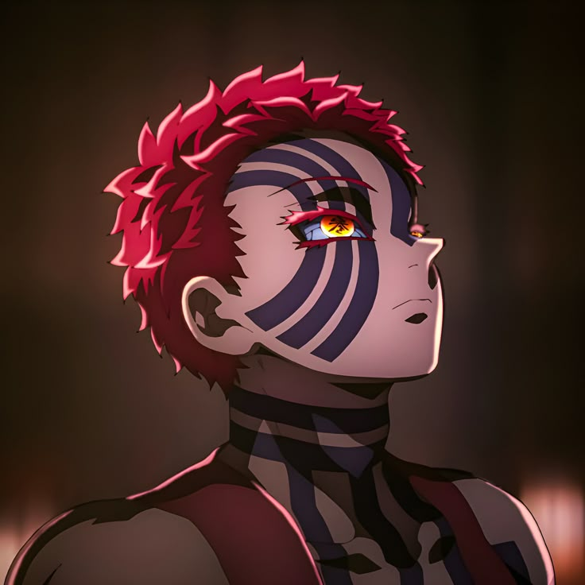
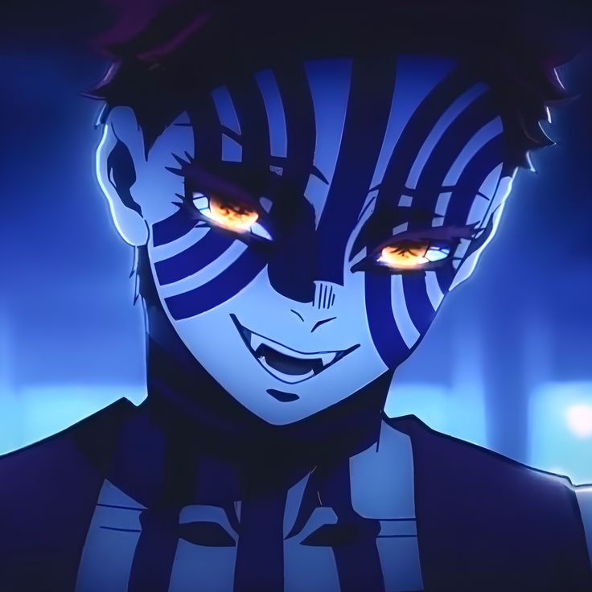
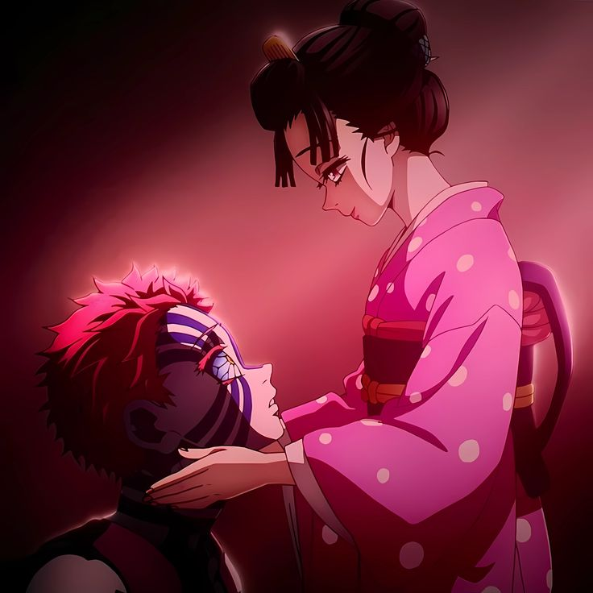
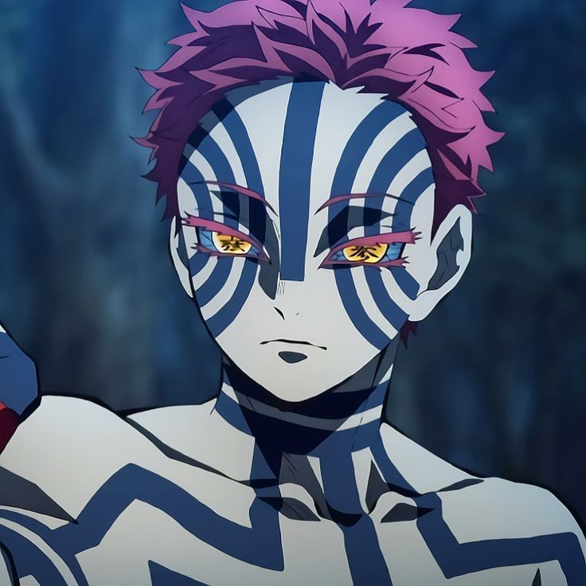
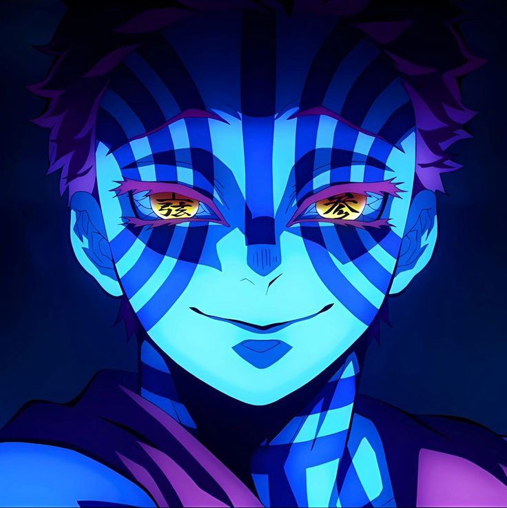
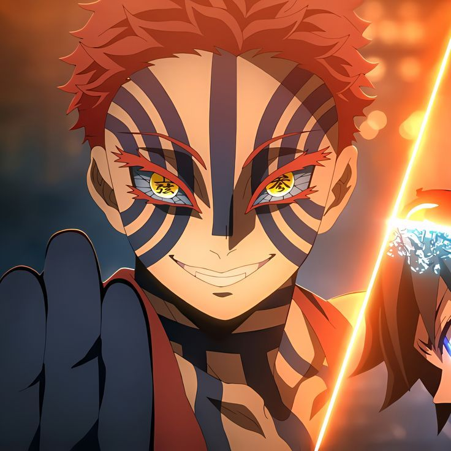
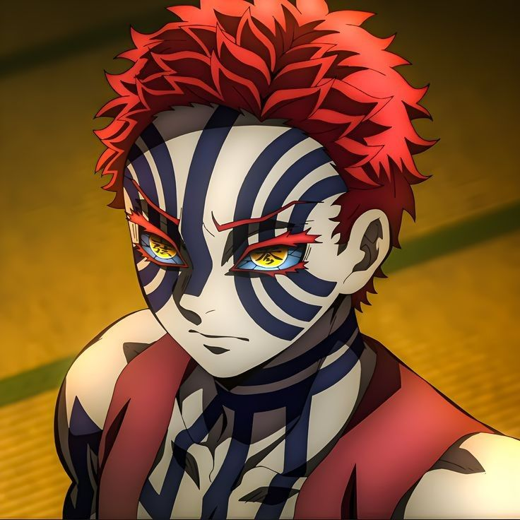
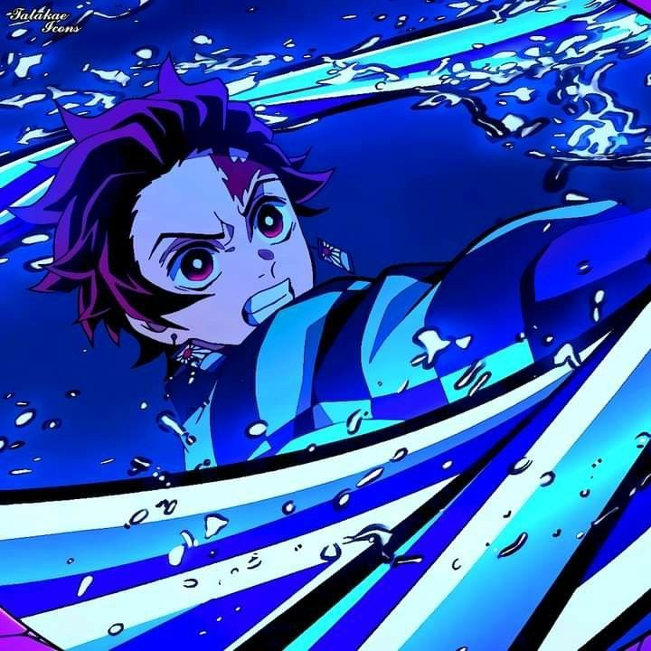
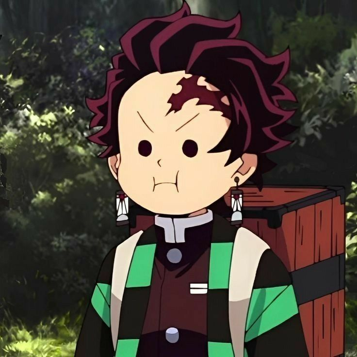
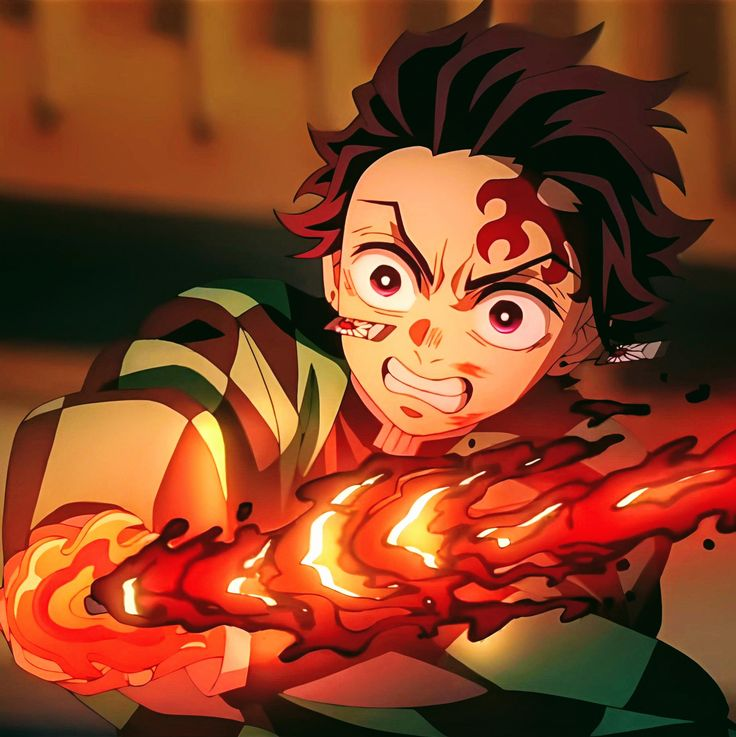
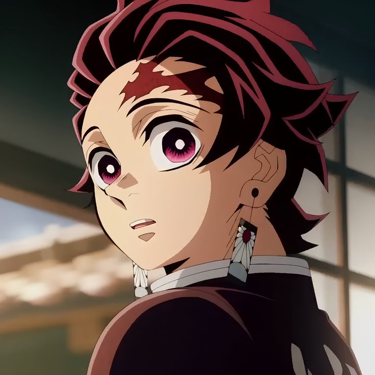
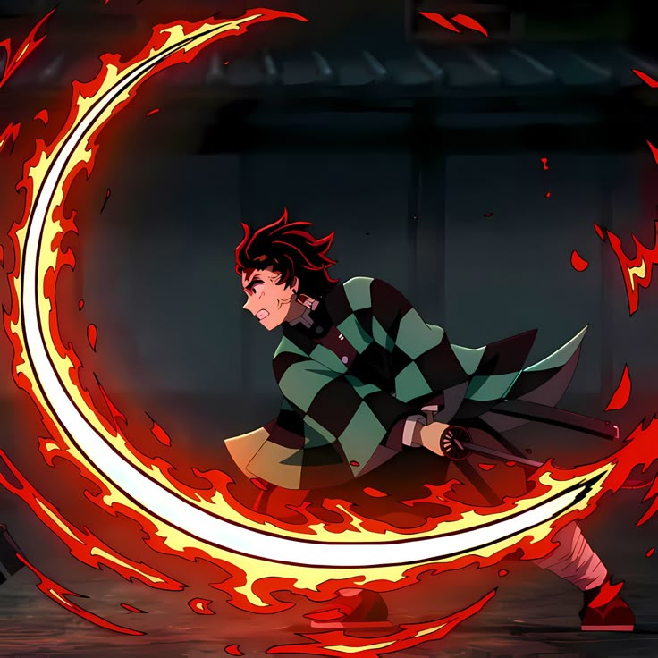
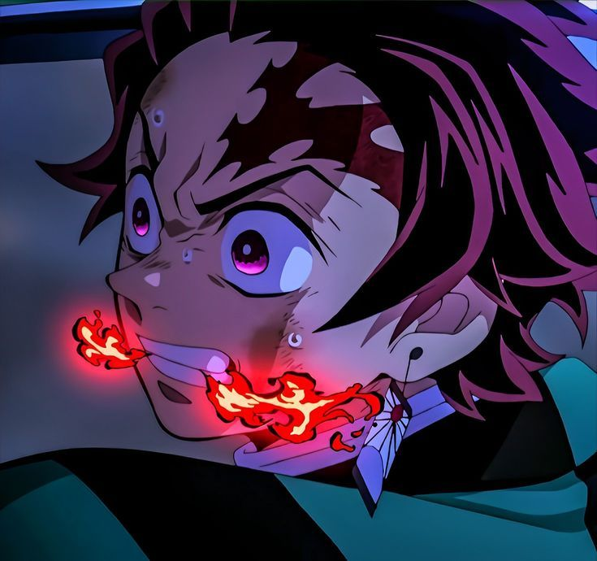
Geser terus ke bawah. Halaman akan berjalan ke samping.
Pola di tubuh Akaza menyala tiap dia mengunci lawan. Setiap gerakan lawan terbaca sebelum terjadi.
Tarian api warisan keluarganya. Semakin lama bertarung, semakin panas dan tajam gerakannya.
Akaza bertarung dengan tangan kosong. Ia menghormati petarung yang kuat, apa pun bentuknya.
Gerakan mengalir yang menjadi dasar semua tekniknya, sebelum api ikut menyala.
“Api tidak menang karena lebih panas, tetapi karena ia menolak padam. Bulan tidak menang karena lebih tinggi, tetapi karena ia tak pernah lelah bersinar.”
Akaza pertama kali muncul dan menunjukkan betapa jauh jarak kekuatan antara iblis dan pemburu.
Tanjiro belajar bahwa bertahan hidup saja tidak cukup. Ia harus jadi lebih kuat.
Pertemuan kedua, dengan taruhan yang jauh lebih besar untuk kedua pihak.
Insect Hashira
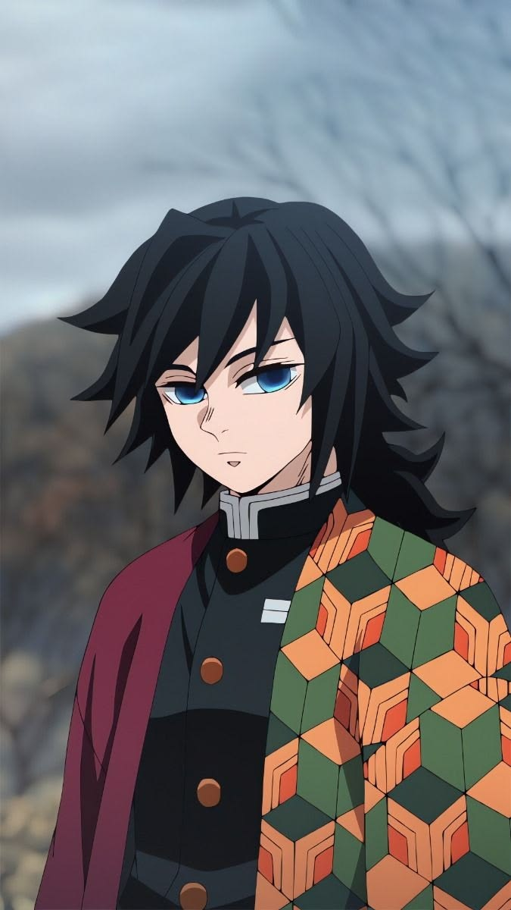
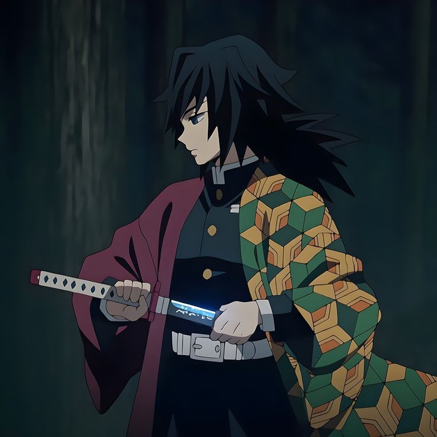
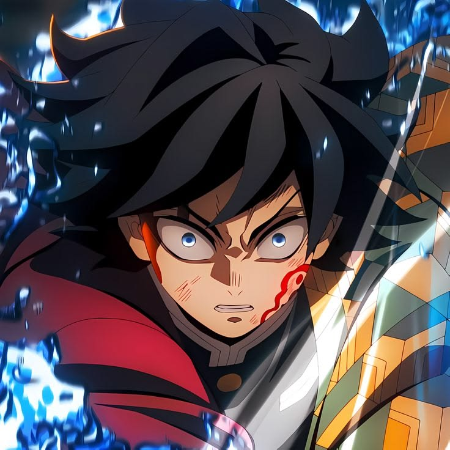
Water Hashira
Pendekar air yang pendiam. Gerakannya setenang arus sungai, tetapi tebasannya tegas dan tidak ragu. Ia jarang bicara, tetapi selalu hadir saat dibutuhkan.
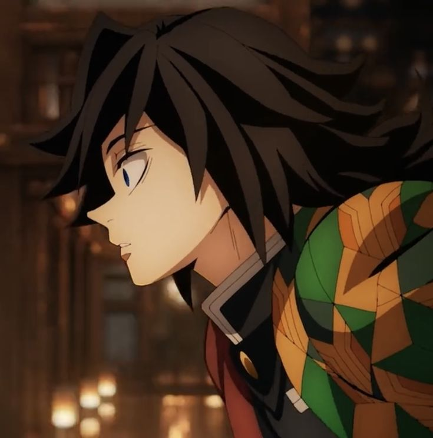
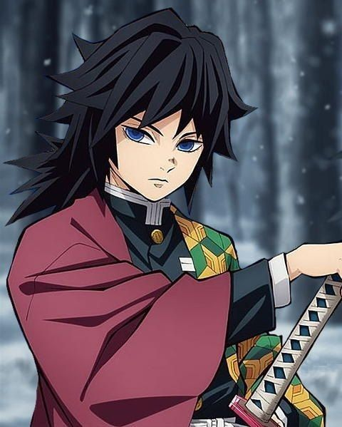
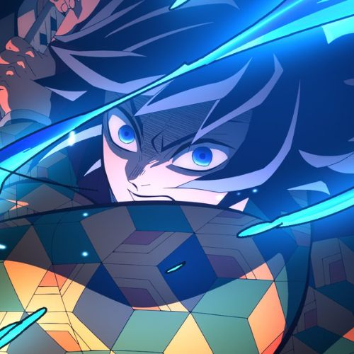
Alfari Design